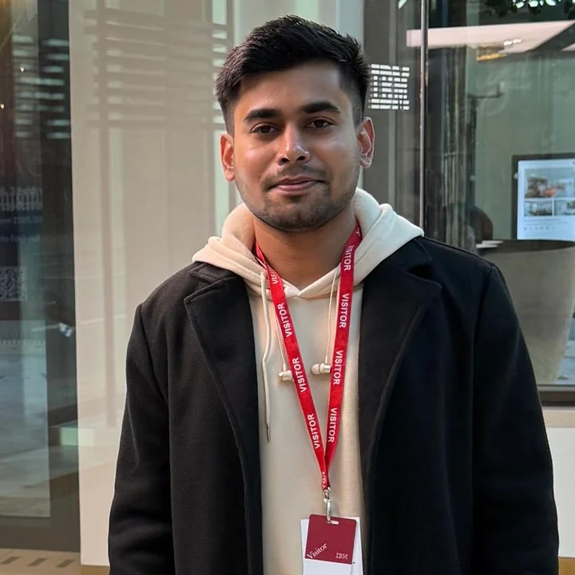
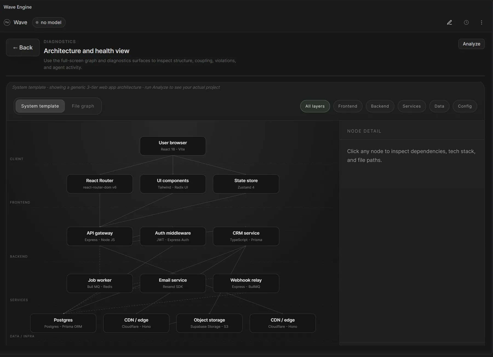
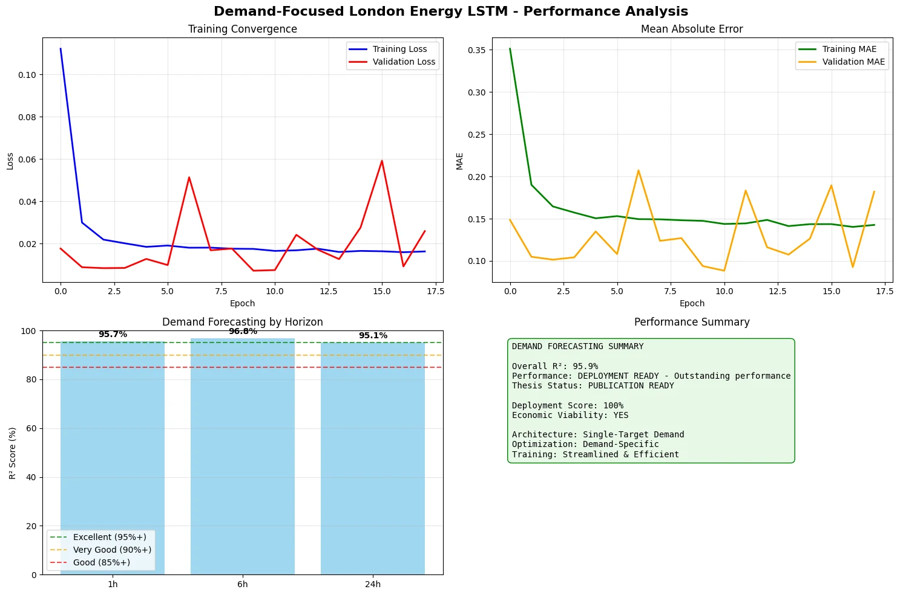
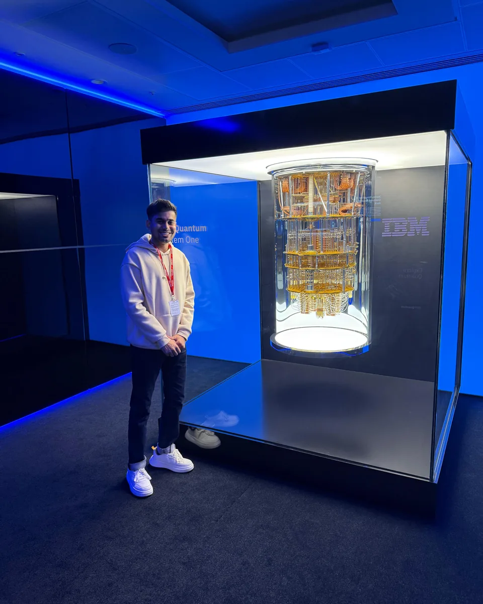
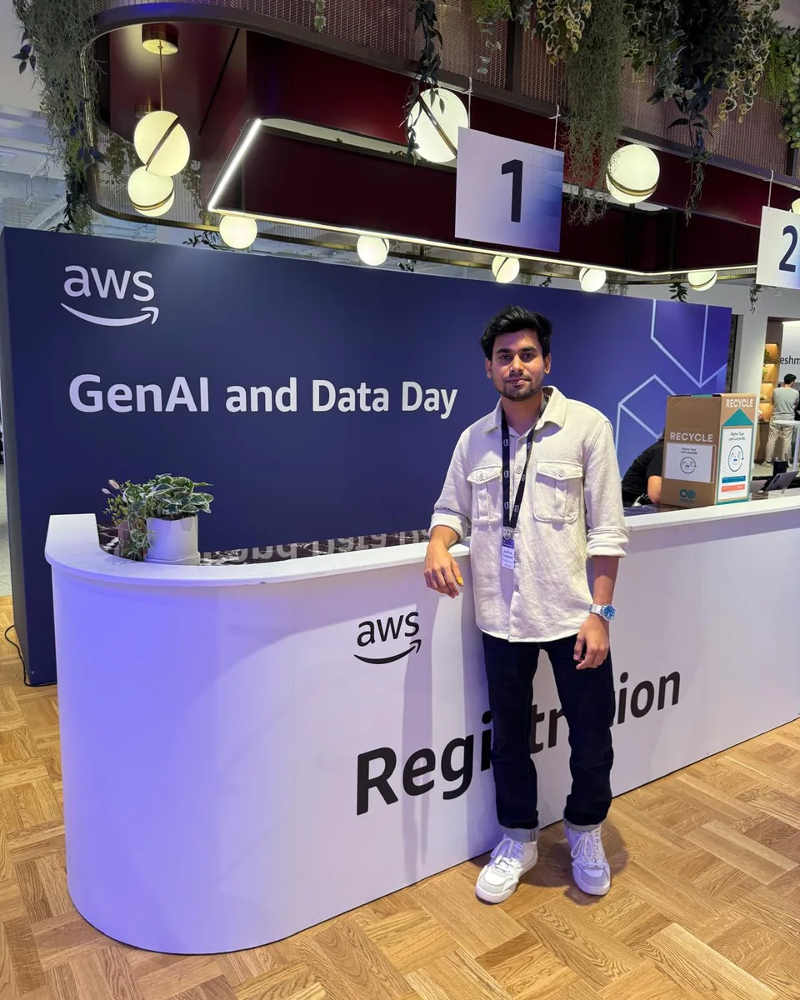
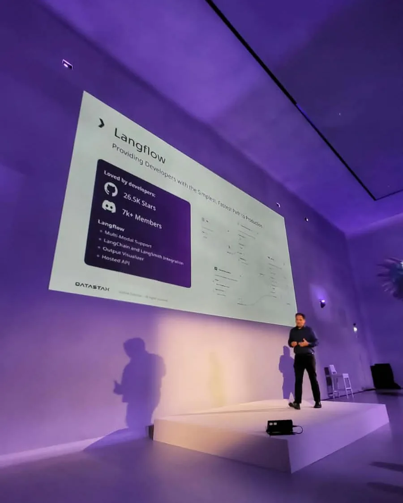
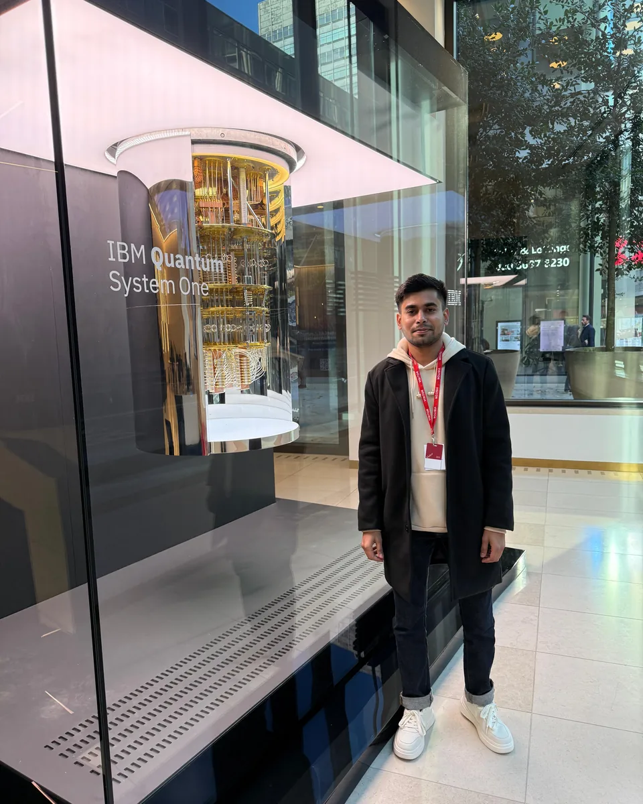

AI and Machine Learning Engineer
Aditya Talekar
I build multi-agent LLM systems that verify their own output: agents that gather evidence, critics that check it, and a human approval step where it matters. I have shipped this as a VS Code extension with hundreds of users, a security platform for banks, and production data pipelines for a research firm. I also teach Artificial Intelligence at Dr. D. Y. Patil Pratishthan’s College of Engineering, Kolhapur.

Experience
Assistant Professor, Artificial Intelligence
- Teach Artificial Intelligence, C Programming and Data Structures to about 300 B.Tech students, from theory to deploying LLM agents with vLLM.
- Industry Outreach Coordinator and hackathon mentor; deployed a 30-billion-parameter model live for students.
Independent AI Consultant
- Sole engineer for data, AI and infrastructure on a live site with 30,000+ reports.
- 22,000+ figures verified, pages from 909 ms to 1 ms, AI spend to about zero, outreach up tenfold, 1.35 million bot requests blocked.
Project Engineer
- Ran infrastructure projects end to end: schedules in Microsoft Project, budgets and bills in Excel, clients, and a team of ten.
- Automated reporting with Python and Power BI, cutting turnaround from one month to one week.
Business Analyst Intern
- Validated project data in SQL and Excel, fixed recurring reporting errors and improved billing accuracy.
- Produced more than ten analytical reports for executive audiences.
Projects

Wave Engine
A local 4-bit model directs 107 specialist agents over the repository; every answer is critiqued and confidence-scored before it is shown. 767 downloads on the VS Code Marketplace; responses cut from about 40 seconds to 5.
Read more →
Guardian
Maps a bank's internet-facing estate from one domain, fingerprints every endpoint, builds a trust graph and predicts which weaknesses will escalate. 44 discovery modules; a full scan in under seven minutes. Presented at IDBI Innovate 2026.
Read more →
NexusRAG
Keyword and vector search in one PostgreSQL database, fused and filtered to the best ten passages. Answers are cited, or withheld when the evidence is weak. Four LLM providers with automatic failover; 160 tests.
Read more →
EnergyNexus
Forecasts demand, price and wind generation with CNN-LSTM and wavelet-LSTM models, trained on a million-row synthetic London dataset I built. R² of 95.9% for demand, 93.1% for wind and 70.3% for price.
Read more →Other projects
- Offline-first attendance platformA PWA and Android app for my department, with no paid servers.GitHub
- Biomedical hybrid searchBM25F, Word2Vec and MiniLM re-ranking over PubMed; QMUL coursework.GitHub
- Multi-frame number-plate OCRAligns and fuses blurry photos before OCR, with OpenCV.GitHub
- Short-form video pipelineClips, Whisper captions and a five-platform uploader.GitHub
- Deception detection from speechAudio features and a tuned random forest, with librosa and scikit-learn.GitHub
Education
MSc Data Science and Artificial Intelligence, Distinction
Modules. Neural Networks and Deep Learning; Principles of Machine Learning; Data Mining; Information Retrieval; Statistics for AI and Data Science; Programming for AI and Data Science; Risk and Decision-Making for Data Science and AI; Ethics, Regulation and Law in Digital Decision-Making.
Dissertation. EnergyNexus, LSTM forecasting of energy demand, price and wind generation (R² up to 95.9%). Read it.
BE Civil Engineering
Management. Project Management and Engineering Economics; Quantity Surveying, Contracts and Tenders; Infrastructure Engineering and Construction Techniques.
Engineering. Structural analysis and design, geotechnical and foundation engineering, fluid mechanics, transportation, environmental engineering, hydrology.
Foundations. Engineering mathematics I to III, physics, chemistry, mechanics, surveying; materials, surveying and fluids laboratories; site visits; drawing and estimation work.
Publication
A Comprehensive Study on Generation and Disposal of Solid Waste and its Smart Management in Warje (Pune), with P. Murke, T. Patil and Prof. A. Datye. Surveyed about 85 tonnes of waste a day, showed about 64% of dry waste could be recovered, and proposed an RFID and IoT smart-bin system. Read the paper.
Certifications
Quantity Surveying and Project Billing using MS-Excel; Project Planning using Microsoft Project.
Skills
- AI and agents
- Multi-agent systems, LangGraph, LangChain, retrieval-augmented generation, LLM orchestration, vLLM, llama.cpp, prompt caching, vector search
- Machine learning
- PyTorch, TensorFlow and Keras, scikit-learn, deep learning, NLP, time-series forecasting
- Data and infrastructure
- PostgreSQL, pgvector, MySQL, Neo4j, MongoDB, FAISS, FastAPI, Docker, GitHub Actions, Cloudflare
- Languages and tools
- Python, SQL, TypeScript, C, PHP, Power BI, Microsoft Project, Excel
Events




Contact
For hiring, consulting or a guest lecture on LLM deployment, e-mail aditya.a.talekar@gmail.com or call +91 96739 04714. I usually reply within a day.